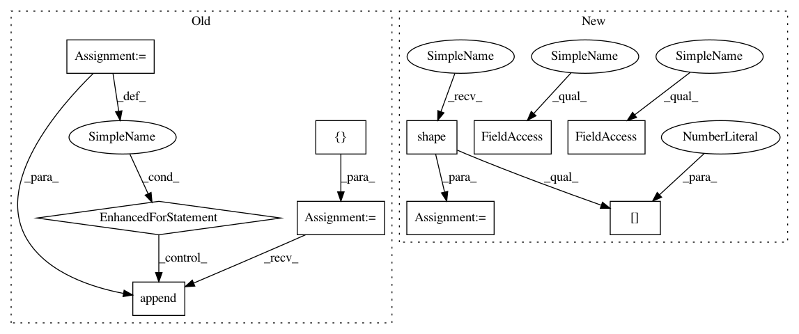

5fb4404583ecffdee8cf98e4ae9e0a91d479f071,niftynet/layer/loss_segmentation.py,LossFunction,layer_op,#LossFunction#Any#Any#Any#,46
Before Change
for ind, pred in enumerate(prediction):
// go through each scale
loss_batch = []
for b_ind, pred_b in enumerate(tf.unstack(pred, axis=0)):
// go through each image in a batch
pred_b = tf.reshape(pred_b, [-1, self._num_classes])
// performs softmax if required
if self._softmax:
pred_b = tf.cast(pred_b, dtype=tf.float32)
pred_b = tf.nn.softmax(pred_b)
// reshape pred, ground_truth, weight_map to the same
// size: (n_voxels, num_classes)
// if the ground_truth has only one channel, the shape
// becomes: (n_voxels,)
if not pred_b.shape.is_fully_defined():
ref_shape = tf.stack(
[tf.shape(pred_b)[0], tf.constant(-1)], 0)
else:
ref_shape = pred_b.shape.as_list()[:-1] + [-1]
ground_truth_b = tf.reshape(ground_truth[b_ind], ref_shape)
if ground_truth_b.shape.as_list()[-1] == 1:
ground_truth_b = tf.squeeze(ground_truth_b, axis=-1)
if weight_map is not None:
weight_b = tf.reshape(weight_map[b_ind], ref_shape)
if weight_b.shape.as_list()[-1] == 1:
weight_b = tf.squeeze(weight_b, axis=-1)
else:
weight_b = None
// preparing loss function parameters
loss_params = {
"prediction": pred_b,
"ground_truth": ground_truth_b,
"weight_map": weight_b}
if self._loss_func_params:
loss_params.update(self._loss_func_params)
// loss for each batch over spatial dimensions
loss_batch.append(self._data_loss_func(**loss_params))
// loss averaged over batch
data_loss.append(tf.reduce_mean(loss_batch))
// loss averaged over multiple scales
return tf.reduce_mean(data_loss)
After Change
return tf.to_float(self._data_loss_func(**loss_params))
loss_batch = tf.map_fn(
fn=_batch_i_loss,
elems=tf.range(tf.shape(pred)[0], dtype=tf.int32),
dtype=tf.float32,
parallel_iterations=1)
// loss averaged over batch
data_loss.append(tf.reduce_mean(loss_batch))
// loss averaged over multiple scales
In pattern: SUPERPATTERN
Frequency: 4
Non-data size: 10
Instances
Project Name: NifTK/NiftyNet
Commit Name: 5fb4404583ecffdee8cf98e4ae9e0a91d479f071
Time: 2018-08-07
Author: wenqi.li@ucl.ac.uk
File Name: niftynet/layer/loss_segmentation.py
Class Name: LossFunction
Method Name: layer_op
Project Name: google/tf_mesh_renderer
Commit Name: 8aaabd6dfcd2f4ae5618ef08657bbba82e8bd69f
Time: 2019-05-28
Author: david.erler@gmail.com
File Name: mesh_renderer/rasterize_triangles.py
Class Name:
Method Name: rasterize_clip_space
Project Name: tensorflow/cleverhans
Commit Name: 4887ef8baecbf5315ec0f235e56a4f93cd05aad7
Time: 2018-10-04
Author: nottombrown@gmail.com
File Name: cleverhans/attacks_tf.py
Class Name:
Method Name: spm
Project Name: NifTK/NiftyNet
Commit Name: 5fb4404583ecffdee8cf98e4ae9e0a91d479f071
Time: 2018-08-07
Author: wenqi.li@ucl.ac.uk
File Name: niftynet/layer/loss_segmentation.py
Class Name: LossFunction
Method Name: layer_op
Project Name: NifTK/NiftyNet
Commit Name: 5fb4404583ecffdee8cf98e4ae9e0a91d479f071
Time: 2018-08-07
Author: wenqi.li@ucl.ac.uk
File Name: niftynet/layer/loss_regression.py
Class Name: LossFunction
Method Name: layer_op